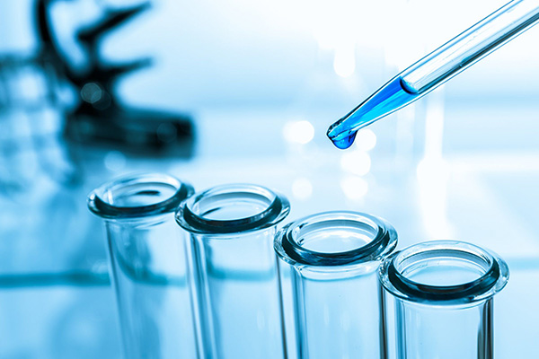
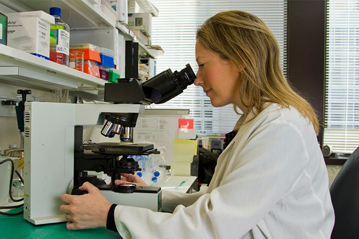
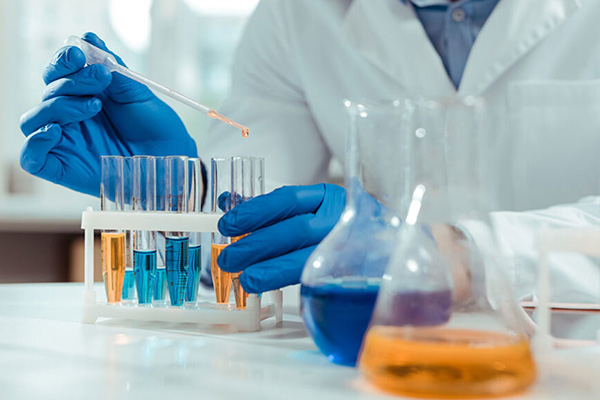
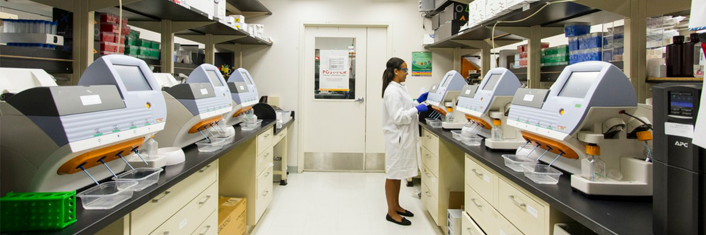

제품과 기술
R&D
R&D
미래를 위한 스페셜티 케미칼 제품의 연구·개발
-

셀룰로스 유도체 연구
- 셀룰로스계 수용성 고분자 개발
- 건축 및 페인트 등의 성능개선을 위한 주요 첨가물(MECELLOSE®, HECELLOSE®) 등 광범위한 산업 분야에 널리 사용되는 셀룰로스계 수용성 고분자를 적극 개발해 나가고 있습니다. 회사는 앞으로도 지속적인 연구개발로 고객만족과 경쟁력을 갖춘 제품 개발에 최선을 다하는 동시에 신규 셀룰로스계 고분자의 상업화를 위한 기술 개발도 적극적으로 추진할 것입니다.
-

식품·의약 소재 연구
- 다양한 분야의 식품·의약 소재 개발
- 식품·의약 소재 연구부문은 셀룰로스계 수용성 고분자를 응용해 의약용 코팅재료(AnyCoat-C, AnyCoat-P), 식품용 첨가제(AnyAddy®) 등을 개발하였습니다. 또한 지속적인 연구개발과 기술지원 등으로 각종 기능성 의약소재 개발 및 저지방, 식품안전 등 식품시장의 트렌드 변화를 이끄는 식품적용 기술 탐구 등 다양한 분야의 의약·식품 소재 연구를 수행하고 있습니다.
-

스페셜티 케미칼 연구
- 고부가 스페셜티 케미칼 개발
- 회사가 보유한 아민계, 염소계 케미칼 기술 플랫폼을 바탕으로, 신규 고부가가치 스페셜티 케미칼의 개발을 수행하고 있습니다. 회사의 미래 비전을 실현하기 위해서 경쟁력을 갖춘 동시에 친환경적인 제조공정 기술의 개발을 적극적으로 수행하고 있습니다.
-
R&D 센터
차세대 기술개발의 산실인 롯데정밀화학 기술총괄(R&D센터)는

각 부문의 전문 연구원이 셀룰로스 유도체, 식품 및 의약소재, 친환경 분야의
스페셜티 제품 연구 개발에 매진하여 기술혁신과 지속성장 동력 확보에 주력해 왔습니다.